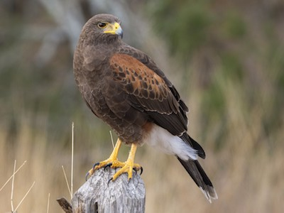

Wow! Based on your answers... You share similarities with Harris's Hawk (Parabuteo unicinctus) with a little bit of Parakeet (Melopsittacus undulatus)

Harris's hawk is an extremely athletic bird capable of flying up to 120 miles per hour when diving to catch their prey. They are a highly social species of hawk, often found in groups with complex social hierarchies. Harris's hawk is also on the smaller size when it comes to hawks standing around 18-23 inches tall. Parakeets are also extremely social birds mingiling in large groups and can also seek attention of other parakeets or, if someone has one as a pet, the attention of their caretaker. Like these two birds you are athletic, intelligent, maybe a little bit smaller in stature and you enjoy going out and have fun with friends.
Want to learn more about this species? Click the Feather!

Click on Ceasar to Restart!